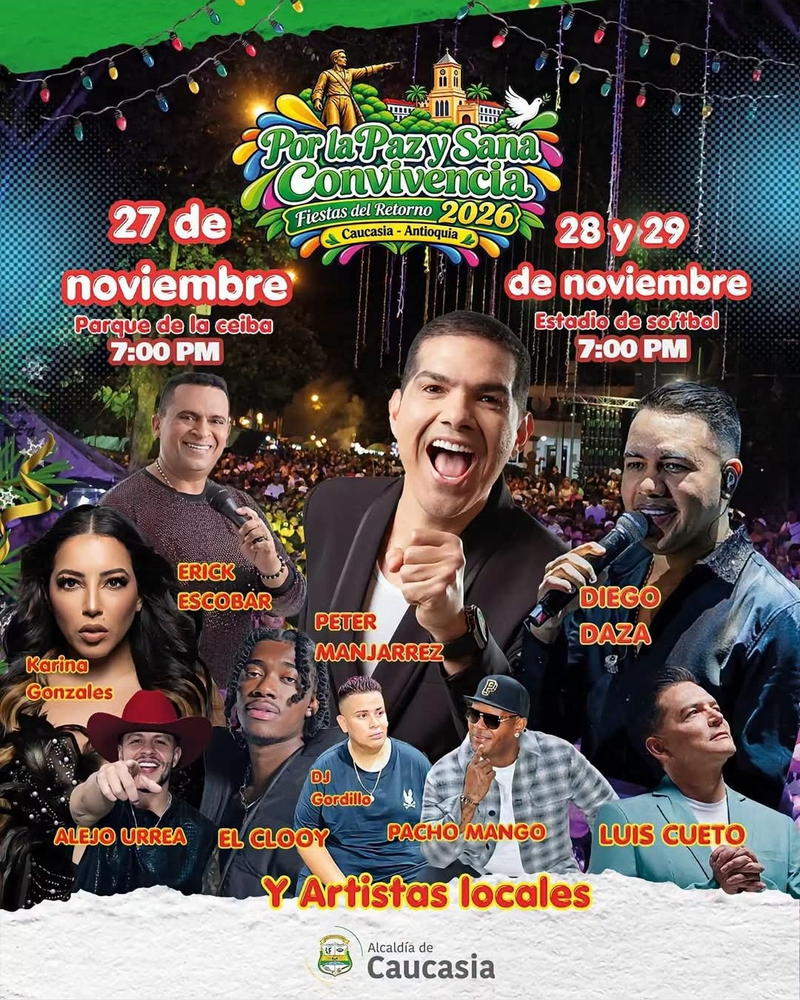

Tres noches de fiesta
Todas las noches desde las 7:00 p. m. La Alcaldía no ha publicado qué artista va cada noche; cuando lo anuncie, aquí lo verás.
Artistas: videos y música
Toca un artista para ver sus videos y escuchar sus canciones aquí mismo.
Los escenarios
Para gozar sin problemas
Alcaldía de Caucasia
